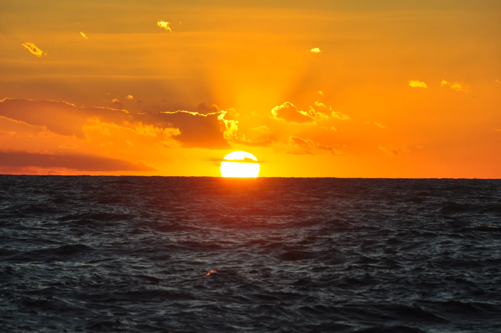
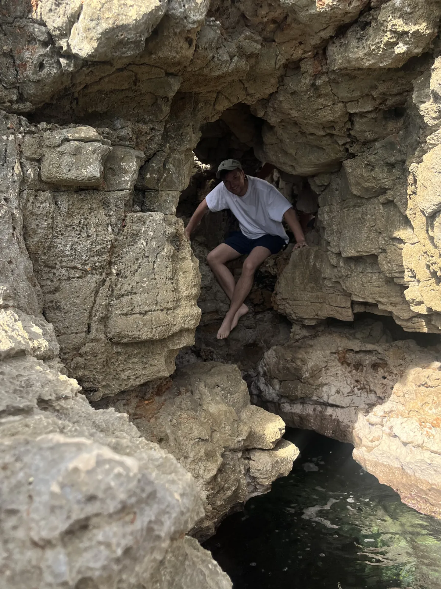
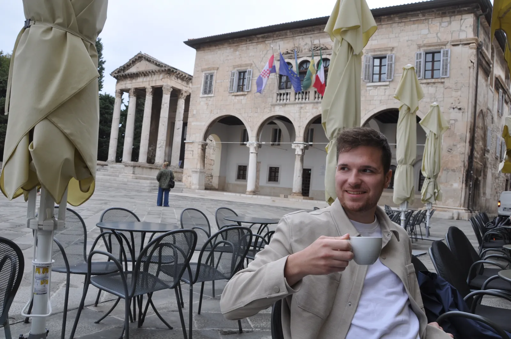
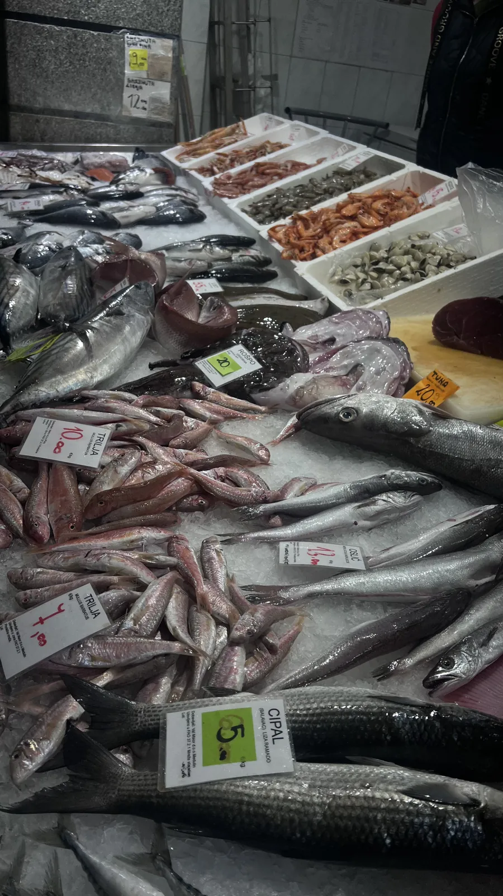
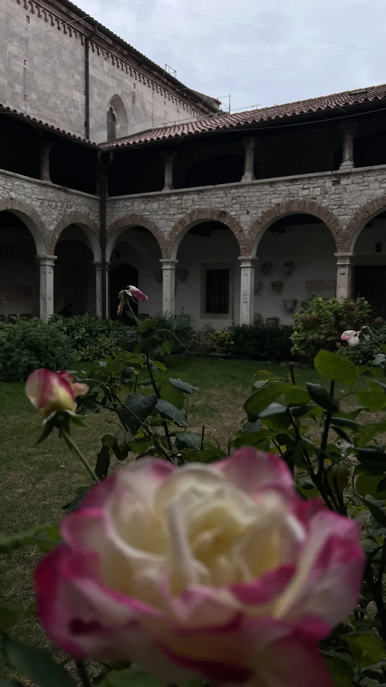
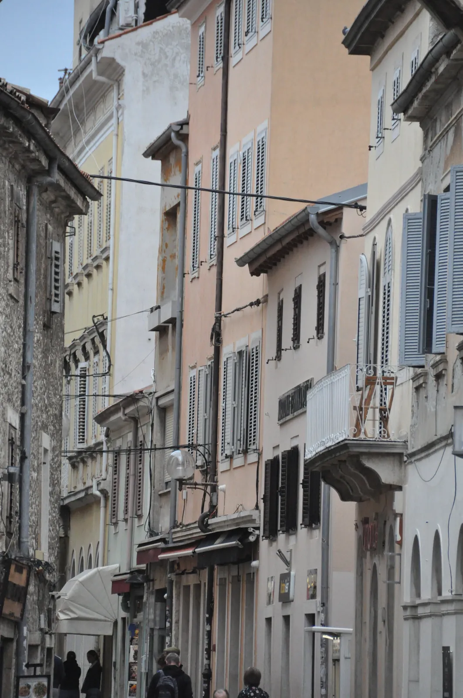
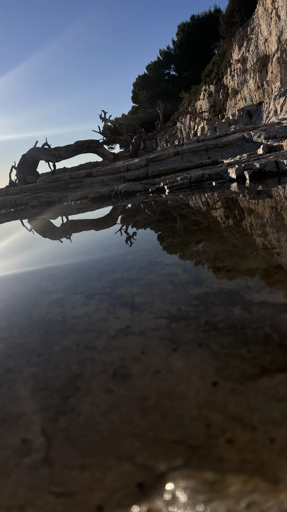
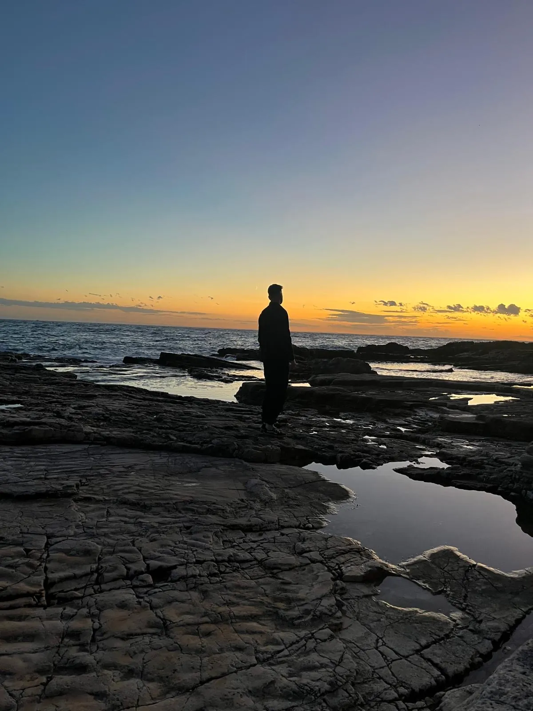
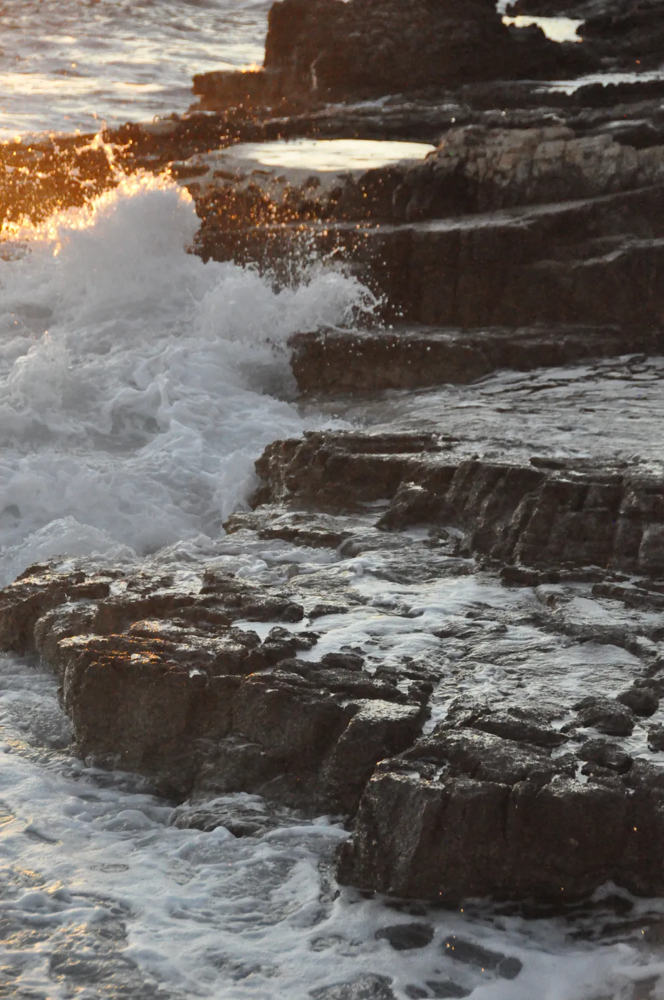

🇭🇷 Pula Guide: 12 Orte – Arena, Sonnenuntergänge, Brijuni, Rovinj & Istriens Hinterland

Inhaltsverzeichnis
Pula ist die Stadt an der Spitze Istriens, in der ein römisches Amphitheater zwischen Ampel und Bushaltestelle steht. Dazu kommen Felsküsten statt Sandstrand, eine Markthalle mit dem Fang des Tages und ein Hinterland mit Trüffeln, Olivenöl und Malvazija-Wein.
Dieser Guide führt dich durch Antike, Küste und Umland, mit Anreise, Preisen als Richtwerte (Stand 2026) und einem Plan für 3 bis 7 Tage. Öffnungszeiten und Eintritte vorher kurz prüfen.
Meine Story in Pula
Eine Woche Pula im Oktober 2025 – und am Ende hatte ich mehr Fotos von Sonnenuntergängen als von der Arena. Ich stand zwischen den Bögen, durch die oberen Fenster fiel das letzte Licht, und unten lief der ganz normale Alltag weiter. Abends wird sie angestrahlt, dann sieht sie aus, als hätte jemand das Kolosseum an die Adria verschoben. Direkt an der Arena legte auf einer Terrasse ein DJ auf, während die Sonne hinter den Dächern verschwand. Antike im Rücken, Beats im Ohr. Den Rest der Woche war ich an der Küste: Felsplatten statt Sandstrand, Wellen, die gegen die Steine krachen. Ich bin in ein Felsloch geklettert, einfach weil es da war, und am letzten Abend stand ich auf den Steinen, bis von mir nur noch eine Silhouette übrig war.


Dieser Guide enthält Werbe-Links (GetYourGuide, Omio). Wenn du darüber buchst, bekomme ich eine kleine Provision – du zahlst keinen Cent mehr. Preise und Öffnungszeiten ändern sich – vor dem Besuch kurz prüfen.
Auf einen Blick
So kommst du nach Pula und herum
Anreise
Pula hat einen eigenen Flughafen (PUY) mit saisonalen Verbindungen aus Deutschland. Vom Flughafen sind es rund 6 km in die Stadt – Taxi oder Bus; aktuelle Linien und Preise vorher prüfen. Per Fernbus erreichst du Pula aus Zagreb, Rijeka, Triest und Ljubljana. Mit dem Auto ist Istrien über die Autobahn gut erreichbar, die Maut kommt dazu.
In der Stadt
Die Altstadt ist klein und zu Fuß machbar. Für Verudela und Kamenjak lohnt sich ein Roller, Rad oder Auto; Busse fahren nach Verudela, im Sommer häufiger.
1. Antike mitten in der Stadt
Die Arena von Pula
Eines der besterhaltenen römischen Amphitheater der Welt, gebaut im 1. Jahrhundert und mitten in der Stadt. Auf Google hat sie 4,6 Sterne bei über 76.000 Bewertungen. Drinnen kannst du dich frei bewegen; im Untergeschoss gibt es eine Ausstellung (unter anderem zu Olivenöl).
Tipp: Abends wird die Arena angestrahlt – komm zum Sonnenuntergang und schau dir danach das Licht an. Im Sommer gibt es Konzerte.
Forum & Augustustempel
Das alte römische Forum ist heute ein Platz mit Cafés. Ich saß dort mit einem Kaffee direkt gegenüber vom Augustustempel – er steht seit rund 2.000 Jahren. Innen gibt es für ca. 2 € eine kleine Sammlung römischer Skulpturen. Auf Google 4,6 Sterne.

Zerostrasse & Festung💎 Hidden Gem
Ein zweigeschossiges Tunnelsystem unter dem Kastell mit Fotos und kühler Luft – perfekt an heißen Tagen. Das Ticket schließt laut Besuchern die Festung oben ein. Auf Google 4,4 Sterne.
Tipp: Die Infotafeln drehen sich viel um die Stadtgeschichte inkl. Straßenbahn – nimm es als kühle Pause, nicht als Museum.
Markthalle (Tržnica)
Ein paar Straßen weiter liegt in der Markthalle der Fang des Tages auf Eis, draußen stapeln sich die Orangen. Die Eisenhalle wurde 1903 eröffnet; drinnen gibt es Fisch und Fleisch, oben Bistros, draußen Obst, Trüffel, Olivenöl und Honig. Auf Google 4,5 Sterne.

Der stille Klosterhof💎 Hidden Gem
Mitten in der Altstadt versteckt sich ein Klosterhof voller Rosen, in dem man vergisst, dass draußen eine Stadt ist.


Sergier-Triumphbogen
Der Sergierbogen aus dem 1. Jahrhundert v. Chr. steht am Eingang der Altstadt und gehört zu den schönsten römischen Triumphbögen. Er ist mit Reliefs und Ornamenten verziert. Von hier führt die Hauptstraße zum Forum.
Ein kurzer, schöner Stopp auf dem Weg in die Altstadt.
Tipp: Mach hier einen kurzen Stopp auf dem Weg ins Zentrum.
2. Küste: Felsen statt Sand
Verudela💎 Hidden Gem
Felsplatten statt Sandstrand, Wellen, die gegen die Steine krachen, und Abende, an denen der Himmel erst orange und dann violett wird. Auf Google 4,7 Sterne; Besucher loben das klare Wasser, bemängeln aber die Steine.
Tipp: Wasserschuhe mitnehmen. Zum Sonnenuntergang kommen – und feste Schuhe für die Felsen.



Fort Bourguignon
Eine der österreichischen Festungen, die in der zweiten Hälfte des 19. Jahrhunderts rund um Pula entstanden (ursprünglich Fort Monsival, 1861–66 gebaut) – ein Lost-Place-Flair am Rand von Verudela. Auf Google 4,1 Sterne.
Tipp: Ein Ort für Neugierige; trittsicher sein und keine abgesperrten Bereiche betreten.
Kap Kamenjak
Eine Halbinsel am südlichen Zipfel Istriens mit vielen kleinen Buchten, türkisem Wasser und Wanderwegen. Auf Google 4,5 Sterne. Für Autos wird laut Besuchern ein Eintritt von rund 10–20 € fällig, zu Fuß oder mit dem Rad ist es kostenlos; die Schotterwege sind staubig.
Tipp: Wasserschuhe und Sonnenschirm einpacken – es gibt wenig Schatten. Früh kommen und mit dem Rad erkunden.
Brijuni-Inseln
Die Brijuni-Inseln sind ein Nationalpark vor Pula mit Natur, Safaripark und Geschichte. Boote fahren von Fažana aus (Preise und Zeiten vorher prüfen). Du kannst auf der Hauptinsel mit einer kleinen Bahn oder dem Rad unterwegs sein.
Plane einen vollen Tag ein.
Tipp: Plane einen vollen Tag und buche das Boot vorher.
3. Istrien: Hum, Trüffel & Wein
Hum – die kleinste Stadt der Welt💎 Hidden Gem
Im Hinterland steht Hum, das sich die kleinste Stadt der Welt nennt, mit rund 30 Einwohnern. Gäste erwähnen die glagolitische Schrift, ein kleines Museum, Likör und Marmelade zum Probieren sowie die Aussicht. Auf Google 4,7 Sterne.
Tipp: Plane Hum mit Motovun (Trüffel) als Tagesausflug mit Auto oder Tour – öffentlich ist es schwierig.
Rovinj – Altstadt am Meer
Rovinj liegt rund 40 Kilometer nördlich von Pula und gehört zu den schönsten Städten Istriens: bunte Häuser, enge Gassen und die Kirche der heiligen Euphemia über dem Hafen. Gut für einen Tagesausflug mit dem Bus oder Mietwagen (Fahrpläne vorher prüfen).
Steig zur Kirche hinauf für den Blick.
Tipp: Steig zur Kirche hinauf für den Blick.
Essen & Trinken
- Fisch und Meeresfrüchte: frisch aus der Markthalle oder in einem Lokal am Hafen.
- Trüffel aus den Wäldern um Motovun – in Pasta oder mit Ei.
- Olivenöl und Malvazija, der istrische Weißwein.
- Sundowner an der Arena: Terrasse, DJ, Sonnenuntergang.
Preise für Fischgerichte liegen deutlich über Pizza und Pasta – frag nach dem Kilopreis.
Wo übernachten?
- Altstadt: alles zu Fuß, nah an Arena, Forum und Markt.
- Verudela: Küste, Hotels und Apartments, ruhiger – abends Felsen und Sonnenuntergänge.
- Premantura: nah am Kap Kamenjak, für Naturfans mit Auto oder Rad.
Was Istrien ausmacht
Die Römer machten Pula zur Kolonie, die Arena entstand im 1. Jahrhundert. Später herrschte Venedig, im 19. Jahrhundert wurde Pula der Hauptkriegshafen der österreichisch-ungarischen Marine. 1904/05 unterrichtete hier James Joyce Englisch. Nach dem Zweiten Weltkrieg kam die Stadt von Italien zu Jugoslawien, seit 1991 gehört sie zu Kroatien.
Mein Fazit: Pula ist kein Ort zum Abhaken – ein halber Tag für die Antike reicht, der Rest gehört der Küste.
Dein Plan
Tag 1: Tag 1 – Antike
- Vormittag – Markthalle, Forum, Augustustempel, Klosterhof
- Nachmittag – Zerostrasse und Festung
- Abend – Arena zum Sonnenuntergang, Sundowner auf der Terrasse
Tag 2: Tag 2 – Küste
- Tag – Verudela: Felsen, Felsloch, Fort Bourguignon
- Abend – Sonnenuntergang auf den Steinen
Tag 3: Tag 3 – Kamenjak oder Hum
- Variante A – Kap Kamenjak mit dem Rad
- Variante B – Hum und Motovun mit Trüffelessen
Häufige Fragen
Wie viele Tage braucht man in Pula?
Für die Stadt reichen 1–2 Tage, mit Küste und Umland 3–5. Noel war eine Woche dort.
Gibt es Sandstrände in Pula?
Kaum – die Küste besteht überwiegend aus Fels und Kiesel. Wasserschuhe sind sinnvoll.
Lohnt sich ein Mietwagen?
Für Kamenjak, Hum und Motovun ja. Die Stadt und Verudela kommst du ohne Auto aus.
Wann ist die beste Reisezeit?
Mai–Juni und September–Oktober: warm genug, weniger voll. Noel war im Oktober 2025 dort.
🗺️ Alle Orte auf meiner Karte → Mehr Guides und Reels auf Instagram: @hiddengem.atlas
Guide teilen: Per WhatsApp